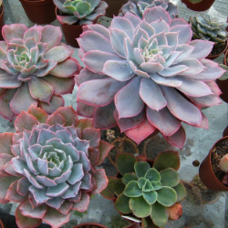

Каталог
А Б В Г Д Е Ж З И Й К Л М Н О П Р С Т У Ф Х Ц Ч Ш Щ Э Ю Я
А |
|||

|
Агава Агава королевы Виктории выглядит очень красиво и эффектно, за счет идеальной округлой формы, в диаметре достигающей 40-60 см. Она имеет достаточно жесткие, но имеющие невероятный узор, темно-зеленые листья. подробное описание |

|
Алое У многих людей дома на подоконниках стоит горшок с алоэ. Помимо привлекательного внешнего облика, это растение обладает еще и массой целебных свойств. подробное описание |
М |
|||

|
Молодило Молодила не просто красивые растения, они отличаются весьма неординарным «характером», поскольку открывают простор для создания неожиданных композиций. Чаще всего их используют в рокариях, на альпийских горках и подпорных стенках. подробное описание |
||
П |
|||

|
Пахифитум Пахифитум – миниатюрное декоративное растение из семейства Толстянковые. Каплевидные листочки зеленого, сизо-голубого или розового цвета напоминают камешки. Неудивительно, что пахифитум также называют «лунный камень». подробное описание |
||
Э |
|||

|
Эониум Настоящее сокровище среди эониумов, станет украшением любой коллекции суккулентов. Привлекает своей роскошной окраской - зеленый цвет в середине переходит в ярко- желый, по краю листьев проходит темно-красный кант. подробное описание |

|
Эуфорбия Эуфорбии благодарны своей популярности весьма эффектной форме, нетребовательности в уходе, а также своей долговечности. Большая часть таких растения даже спустя много лет не утрачивают привлекательный внешний вид. подробное описание |
|  |
Эхеверия Настоящее сокровище среди эониумов, станет украшением любой коллекции суккулентов. Привлекает своей роскошной окраской - зеленый цвет в середине переходит в ярко- желый, по краю листьев проходит темно-красный кант. подробное описание |
||